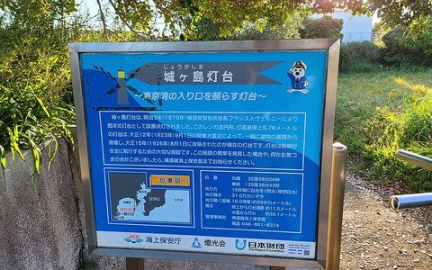
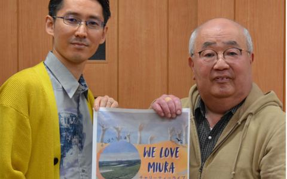
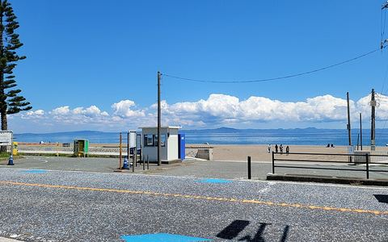
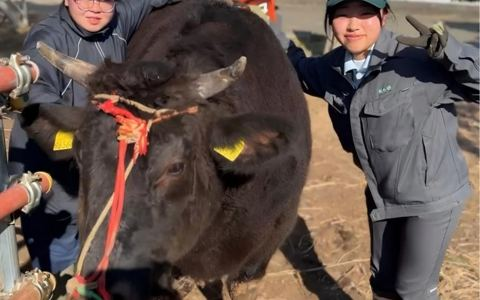

MIURA A-TEI · EAT & SEEMiura A-tei
Eat & See
Eat, see, do, and shop around Misaki, Jogashima, and Miura Kaigan — with walking times from A-tei.
As of November 14, 2026. Updated automatically every morning. Event headlines are in English; details are in Japanese.
 HOUSE MANAGER'S PICKSRecommended food & shops mapPlaces to eat and shop nearby, with today's opening statusOpen the map →地図 © OpenStreetMap contributors
HOUSE MANAGER'S PICKSRecommended food & shops mapPlaces to eat and shop nearby, with today's opening statusOpen the map →地図 © OpenStreetMap contributors
Get to know MisakiKnow Misaki
This seasonNovember

10/3–12/31 Misaki tuna “akanemi” stamp rally
10/3 (Sat) – 12/31 (Thu)
年末まで、マグロの茜身（血合い）のスタンプラリーをやっています。スマホだけで、ふつうに食事や買い物をしても押せるそうです

Until 11/29 Hakushu special exhibition at Jogashima's Hakushu Memorial Hall
11/1 (Sun) – 11/29 (Sun)
いま城ヶ島の白秋記念館で、白秋が自分で描いた挿絵の展示をやっているそうです。月・金曜はお休みなので気をつけてください

11/15 Typhoon recovery charity concert at Urari
11/15 (Sun)
11/15の日曜、うらりの展望デッキで台風の復興チャリティーライブがあります。観覧は無料で、最後にみんなでゴスペルを歌うそうですよ

11/21 Miura Kaigan beach-seine contest (rescheduled)
11/21 (Sat)
10/24に雨で流れた地引網、11/21の土曜にやり直すそうです。申込制で11/16までなので、その頃来るなら一緒に引けますよ

11/21 Hasse High harvest festival sells its own home-raised wagyu
11/21 (Sat)
初声高の畜産部が育てたA5の和牛が、11/21の収穫祭で買えるそうです。カレーは200食だけだとか
Misaki Morning Market year-end sale (12/29–30)
12/29 (Tue)
年末は朝市が特別体制です
PlacesPlaces
This list is being checked by the house manager. For now, the map shows places to eat and shop — tap “Open today” to see what is open.
Open the map →Simple list versionNothing matches these filters.